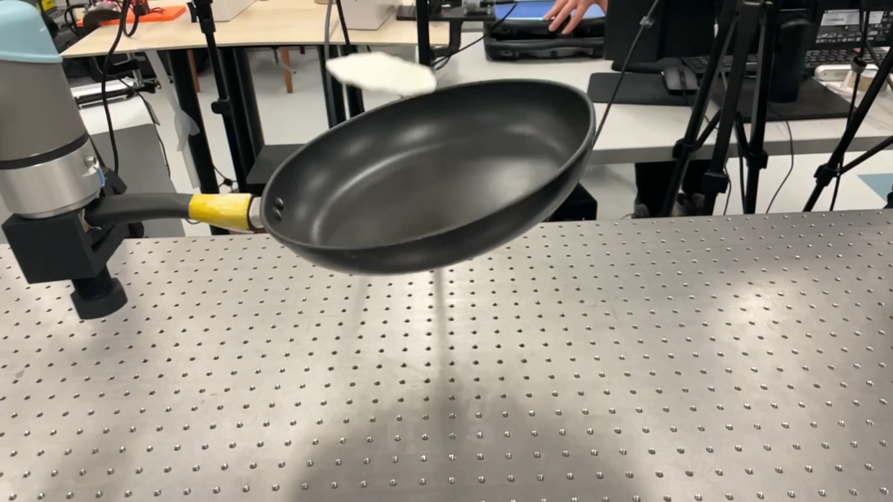
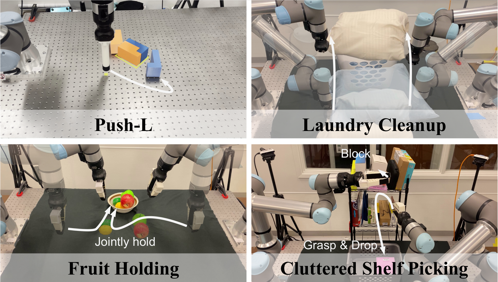
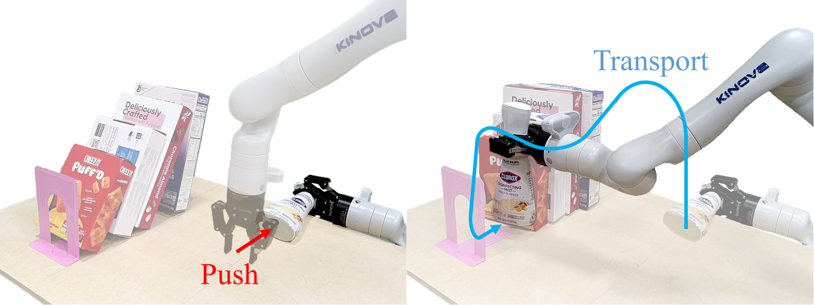

|
Haonan Chen I am a Ph.D. candidate in Electrical and Computer Engineering at the University of Illinois Urbana-Champaign, fortunate to be advised by Katie Driggs-Campbell and to work closely with Yunzhu Li. My research focuses on robotic manipulation, where I develop structured models that help robots reason about the physical world, predict outcomes, and act robustly in unstructured environments. I aim to equip robots with new capabilities by learning from heterogeneous data sources, including simulation, teleoperation, human video, off-policy data, and synthetic content. My work has been recognized with a Best Paper Finalist at CoRL 2023 and a Best Paper Award at the ICRA 2025 Workshop on Foundation Models and NeSy AI. Email / CV / Google Scholar |

|
News
|
ResearchMy research focuses on robotic manipulation, imitation learning, and human-robot interaction. I develop algorithms that enable robots to learn from human demonstrations and improve their manipulation skills in complex environments. |
|
 |
Tool-as-Interface: Learning Robot Policies from Observing Human Tool Use
H. Chen, C. Zhu, S. Liu, Y. Li, K. Driggs-Campbell Under Review, 2025 Project & Video / Paper / IEEE Spectrum Best Paper Award at ICRA 2025 workshop on Foundation Models and Neural-Symbolic (NeSy) AI for Robotics Best Presentation Award at CSL Student Conference 2025 |

|
Towards Uncertainty Unification: A Case Study for Preference Learning
S. Peng, H. Chen, K. Driggs-Campbell Robotics: Science and Systems (RSS) , 2025 Paper |
|
 |
Learning Coordinated Bimanual Manipulation Policies using State Diffusion and Inverse Dynamics Models
H. Chen, J. Xu*, L. Sheng*, T. Ji, S. Liu, Y. Li, K. Driggs-Campbell IEEE International Conference on Robotics and Automation (ICRA), 2025 Project & Video / Paper |

|
Cooperative Advisory Residual Policies for Congestion Mitigation
A. Hasan, N. Chakraborty, H. Chen, J.-H. Cho, C. Wu, K. Driggs-Campbell ACM Journal on Autonomous Transportation Systems (JATS), 2024 Paper |

|
Lessons in Cooperation: A Qualitative Analysis of Driver Sentiments towards real-time Advisory Systems through a Focus Group User Study
A. Hasan, N. Chakraborty, H. Chen, J.-H. Cho, C. Wu, K. Driggs-Campbell IEEE Intelligent Transportation Systems Magazine (ITSM), 2024 Paper |
|
 |
Predicting Object Interactions with Behavior Primitives: An Application in Stowing Tasks
H. Chen, Y. Niu*, K. Hong*, S. Liu, Y. Wang, Y. Li, K. Driggs-Campbell Conference on Robot Learning (CoRL), 2023 Project & Video / Paper Finalist - Best Paper/Best Student Paper Awards |

|
Towards Safety of Multi-Level Human-Robot Interaction in Industrial Tasks
Z. Huang, Y. Mun, H. Chen, Y. Xie, Y. Niu, X. Li, N. Zhong, H. You, D.L. McPherson, K. Driggs-Campbell IEEE Conference on Automation Science and Engineering (CASE), Special Session on Cyberphysical Manufacturing Networks, 2023 |

|
Learning Task Skills and Goals Simultaneously from Physical Interaction
H. Chen*, Y. Mun*, Z. Huang, Y. Niu, Y. Xie, D.L. McPherson, K. Driggs-Campbell IEEE Conference on Automation Science and Engineering (CASE), Special Session on Cyberphysical Manufacturing Networks, 2023 |

|
PeRP: Personalized Residual Policies For Congestion Mitigation Through Co-operative Advisory Systems
A. Hasan, N. Chakraborty*, H. Chen*, J-H. Cho, C. Wu, K. Driggs-Campbell IEEE International Conference on Intelligent Transportation Systems (ITSC), 2023 Paper / Website Best Presentation Award at CSL Student Conference 2024 |

|
Combining Model-Based Controllers and Generative Adversarial Imitation Learning for Traffic Simulation
H. Chen, T. Ji, S. Liu, K. Driggs-Campbell IEEE International Conference on Intelligent Transportation Systems (ITSC), 2022 Paper |

|
Learning to Navigate Intersections with Unsupervised Driver Trait Inference
S. Liu, P. Chang, H. Chen, N. Chakraborty, K. Driggs-Campbell IEEE International Conference on Robotics and Automation (ICRA), 2022 Paper / Website / Video |

|
Robot Sound Interpretation: Combining Sight and Sound in Learning-Based Control
P. Chang, S. Liu, H. Chen, K. Driggs-Campbell IEEE/RSJ International Conference on Intelligent Robots and Systems (IROS), 2020 Paper / Video |
Awards and Honors
|
Service and Leadership
|
Professional Service
|
Extra-Curricular ServiceFounding Team Leader, Robotic Team for RoboMaster Challenge, ZJU-UIUC Institute 10/2017 - 06/2018 |
|
Thanks Jon Barron for this amazing template. |